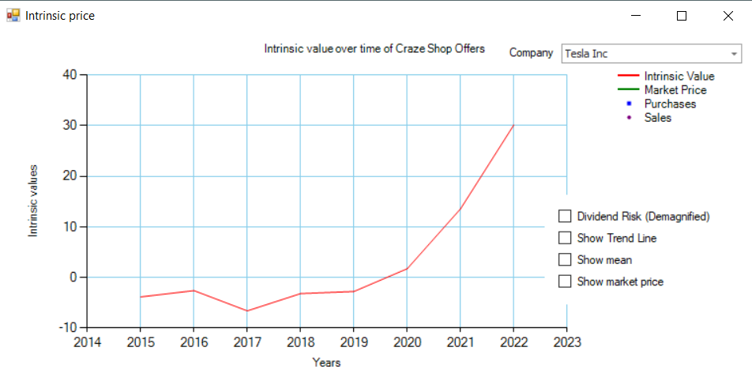
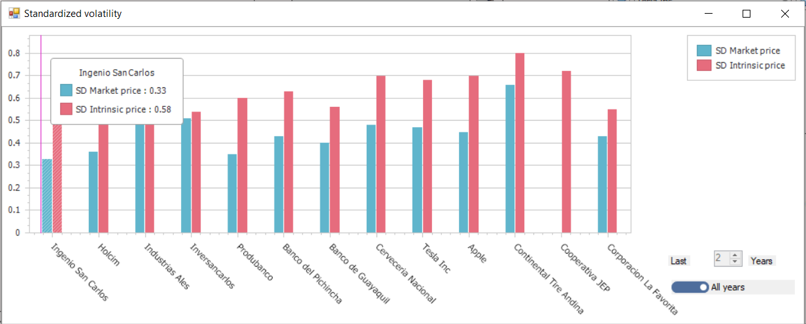
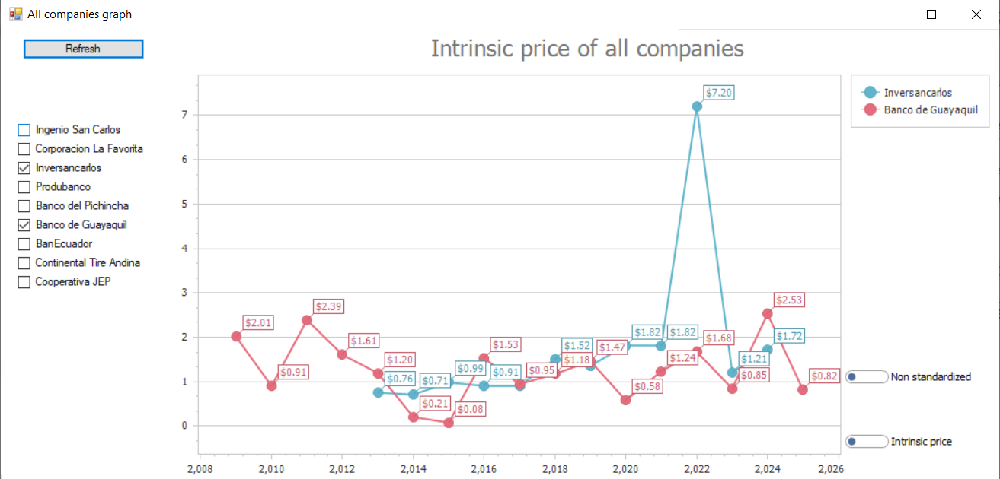
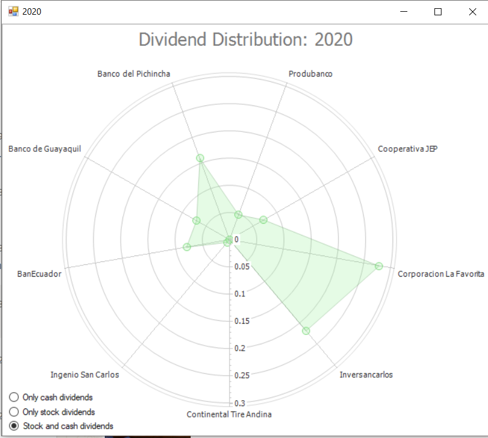
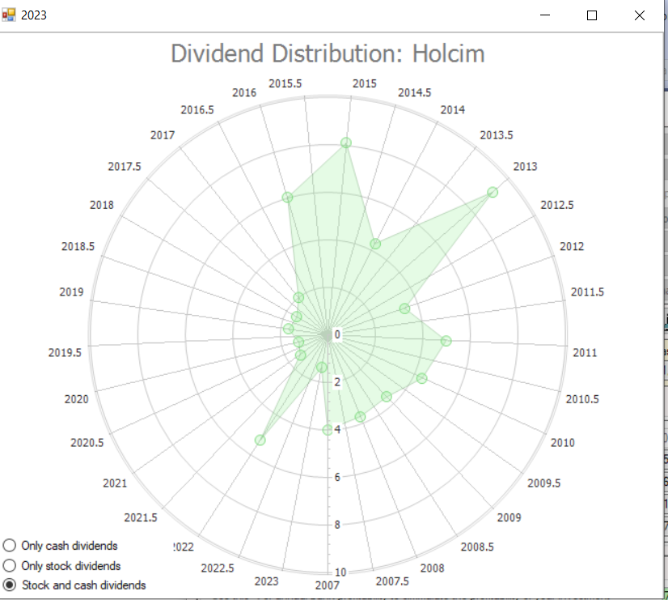
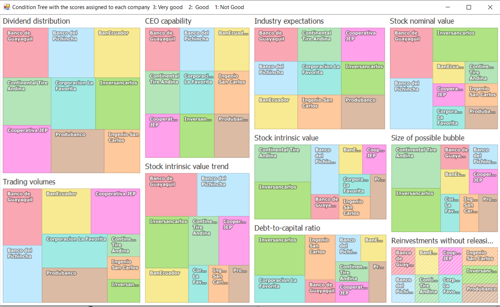
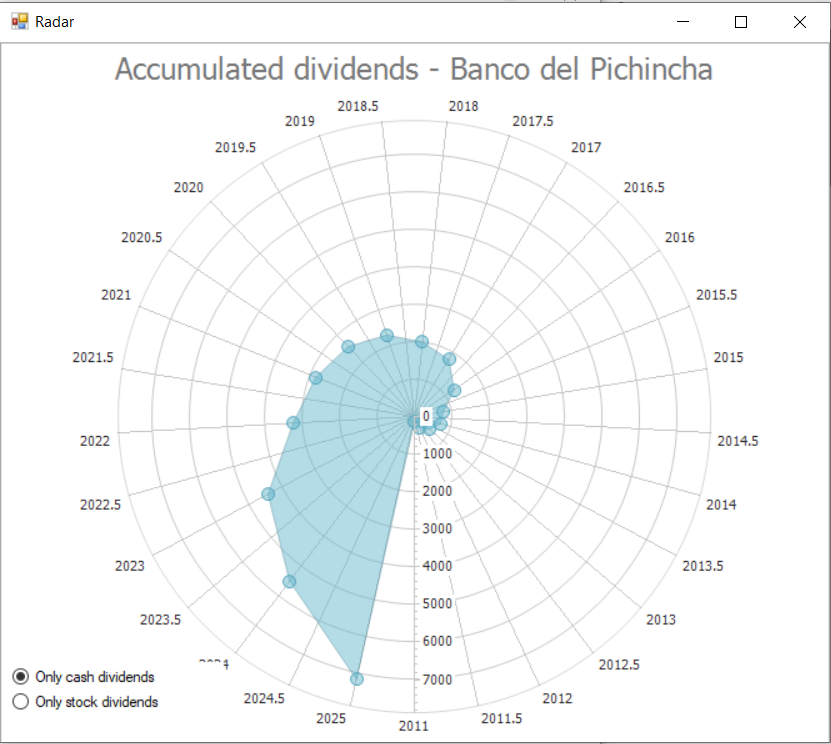
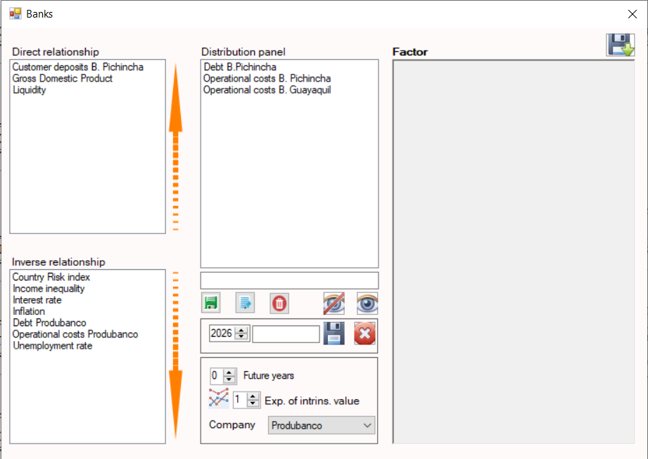

Interface Principal
Visão geral do painel principal do software desktop, fornecendo acesso a todos os módulos analíticos e ferramentas de portfólio.

Registro de Compra de Ações
Interface utilizada para registrar aquisições de ações, incluindo quantidade, preço e metadados da transação.

Registro de Venda de Ações
Módulo para registrar vendas de ações e atualizar posições do portfólio em tempo real.

Dividendos & Cálculo de Valor Intrínseco
Exibe registros de dividendos e calcula o valor intrínseco juntamente com indicadores financeiros adicionais.

Análise de Tendência do Valor Intrínseco
Visualização histórica da evolução do valor intrínseco ao longo de vários anos.

Análise de Volatilidade
Comparação entre a volatilidade do valor intrínseco e os movimentos médios anuais do preço de mercado.

Análise de Correlação
Correlação estatística entre o valor intrínseco e o comportamento do preço de mercado.

Métricas de Estrutura Financeira
Visualização de dívida versus patrimônio, despesas operacionais e posição de caixa disponível.

Índice de Saúde Macroeconômica
Exibe indicadores de força econômica do país associado à ação selecionada.

Radar de Distribuição de Dividendos
Gráfico radar representando a distribuição de dividendos entre todas as ações do portfólio em um ano selecionado.

Desempenho Histórico de Dividendos
Tendências de distribuição de dividendos da empresa ao longo do tempo.

Mapa de Calor de Dividendos do Portfólio
Visualização em mapa de calor dos fluxos de dividendos entre ativos do portfólio e anos.

Análise de Patrimônio & Risco
Acompanha evolução patrimonial, exposição ao risco, dividendos recebidos e divisões por setor.

Árvore de Pontuação de Ações
Avaliação hierárquica de ações baseada em 10 condições predefinidas de investimento.

Configuração de Parâmetros do Sistema
Configurações avançadas para personalização de parâmetros do modelo e lógica de avaliação.

Radar de Atividade do Portfólio
Acompanha ações possuídas, compradas e vendidas ao longo de múltiplos anos.

Análise de Dividendos Acumulados
Total acumulado de dividendos recebidos de todas as posições ao longo do tempo.

Simulação de Desempenho
Simulação rápida comparando retornos do preço de mercado versus valor intrínseco.

Avaliação Ad-hoc de Ações
Ferramenta de avaliação manual para análise personalizada de ações.

Árvore de Peso das Condições
Exibe a distribuição de pesos dos 10 critérios de avaliação.

Radar de Pontuação da Empresa
Visualização em radar das pontuações finais de avaliação da empresa.

Cartões de Pontuação das Ações
Cartões-resumo mostrando resultados de avaliação por ação.

Motor de Simulação de Cenários
Simula alterações nas condições de avaliação para testar sensibilidade.

Simulação Monte Carlo
Avaliação probabilística de ações utilizando cenários de mercado aleatórios.

Classificação de Indústria (Modelo Porter)
Atribui setores e indústrias utilizando lógica estruturada de classificação.

Árvore de Peso dos Setores
Visualização da influência e ponderação entre indústrias.

Avaliação Intrínseca Multi-Anos
Pontuação codificada por cores baseada em diferentes janelas temporais de valor intrínseco.

Análise Técnica de Mercado
Indicadores técnicos avançados aplicados aos dados de preço de mercado.

Sistema de Alertas de Compra/Venda
Define gatilhos futuros baseados em preço para decisões de negociação.

Timestamp de Dados de Mercado
Exibe o horário da última atualização registrada do preço de mercado.

Modelagem de Parâmetros Setoriais
Painel de configuração para parâmetros de modelagem em nível setorial.

Análise de Dividendos vs Despesas
Compara dividendos médios diários com despesas operacionais.

Análise de Juros Compostos
Simulação dos efeitos de capitalização de longo prazo no crescimento do portfólio.

Interface de Suporte Técnico
Módulo de contato para assistência técnica e suporte ao usuário.

Perfil Executivo da Empresa
Painel de informações exibindo dados do CEO e liderança executiva.